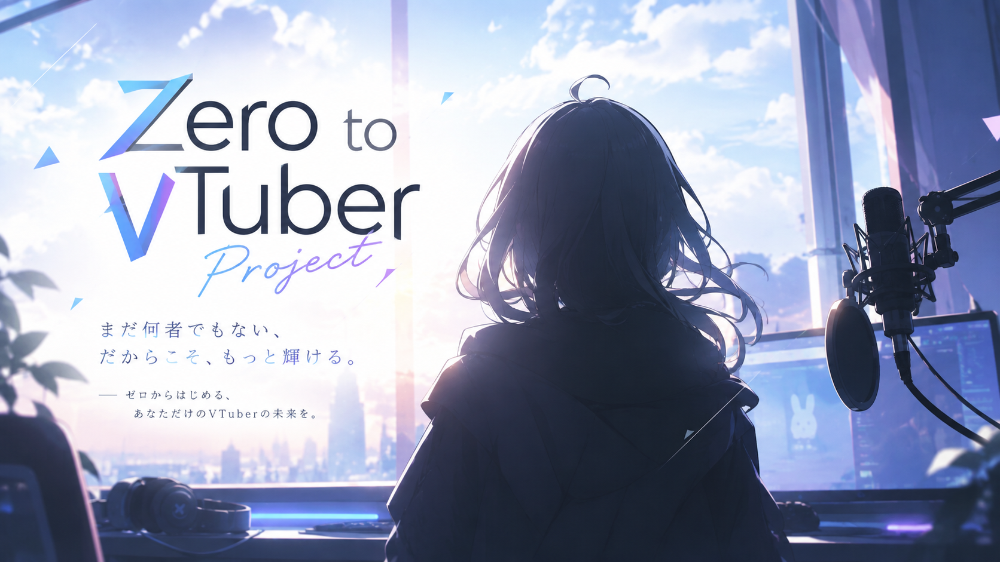
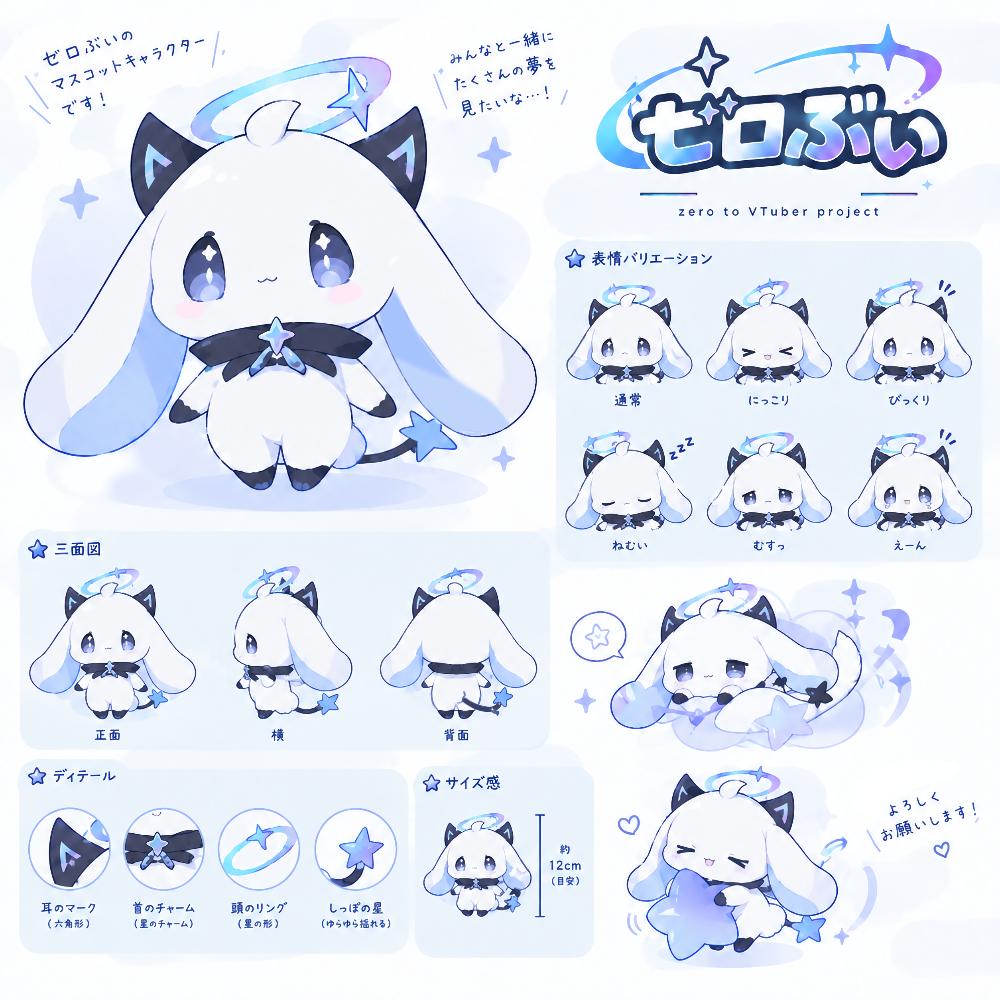

05 / ENTRY
ここから、
始めよう。
少しでも「面白そう」と思ったら、ぜひ応募してください。
まだ何も決まっていないからこそ、あなたと一緒に決めたい。
PERSONAL VTUBER PROJECT / 2026
何もないところからVTuberを作る。
そして、その成長そのものをコンテンツにする。
NOT JUST A VTUBER

このプロジェクトは、最初から大きな事務所や完成された環境で活動するVTuberプロジェクトではありません。
まだ何もない。だからこそ、面白い。を実現するため
VTuber本人、運営、そして視聴者様。みんなで企画を考え、活動を積み重ね、少しずつできることを増やしていく。その「成長していく過程」そのものをコンテンツにしていきます。
THE PROJECT
THE GROWTH IS THE CONTENT
まずは一人のVTuberとして活動をスタート。ゲーム、雑談、企画など、自分に合う形を探していきます。
視聴者の意見や反応を取り入れながら、企画や活動内容をアップデート。みんなで次の目標を決めていきます。
活動によって生まれた成果を、衣装・モデル・楽曲・3D・新企画など、次の挑戦へつなげていきます。
最初には想像できなかった場所へ。1年間の成長そのものを、一つの物語として残します。
INITIAL MEMBER
今回募集するのは、ただ配信をする人ではありません。
「こんなことをやってみたい」を一緒に形にしてくれる、初期メンバーを1名募集します。

VTuber・配信未経験でも大丈夫。経験よりも、長く活動したい気持ちや一緒に作っていく姿勢を重視します。
活動に必要なPC・配信機材などは、プロジェクト側で準備・貸与を予定しています。※機材の貸与には、活動頻度・活動期間・契約内容等の条件があります。詳細は選考・面談時にご説明します。
ゲーム・雑談だけでなく、視聴者参加型企画や成長を記録するコンテンツなど、活動内容を一緒に考えていきます。
短期ではなく、1年後・その先まで見据えて活動できる方を歓迎します。
WHAT WE WANT TO CREATE
最初は小さなプロジェクトでもいい。何もない状態から始まって、少しずつできることが増えていく。その変化を視聴者と共有できるVTuberプロジェクトを目指します。
05 / ENTRY
少しでも「面白そう」と思ったら、ぜひ応募してください。
まだ何も決まっていないからこそ、あなたと一緒に決めたい。
WHAT WE DO
MEMBER
など、VTuberとしての活動を一緒に作っていきます。
SUPPORT
活動を続けやすい環境づくりを、運営側からサポートします。※機材の貸与には、活動頻度・活動期間・契約内容等の条件があります。詳細は選考・面談時にご説明します。
STEP BY STEP
FREQUENTLY ASKED QUESTIONS
→ 未経験でも応募可能です。
→ VTuberとしての活動では顔出しを必要としません。
→ はい、応募できます。※ただし、PCや機材の貸与については条件を満たした場合に限ります。
→ 活動に必要な最低条件があります。詳細については面談時にご説明します。
→ 今回は女性のみの募集になります。
→ 基本18歳以上です。18歳未満の方は、保護者の同意等、別途条件があります。
→ 一切かかりません。
→ デビュー前・デビュー時に、高額な教材・機材・レッスン等の購入を求めることはありません。※面談等に伴う交通費、デビュー以降発生する場合の取り扱いについては、事前にご説明します。
→ はい。不合格の場合も、応募時にご登録いただいた連絡先へご連絡いたします。
PROJECT PROFILE